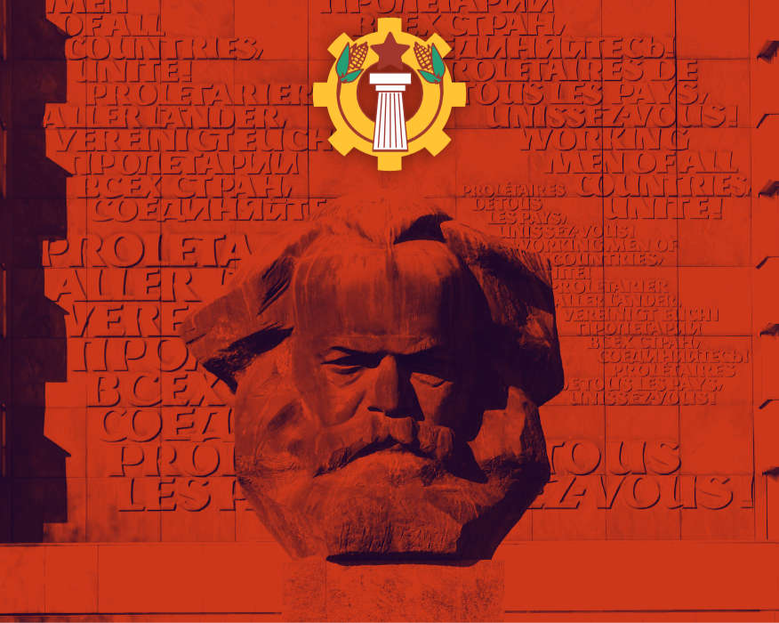

Decálogo Político das Vanguardas Ibérofonas Socialistas
As seguintes dez verdades ou normas fundamentais e irrenunciáveis aqui expostas serão seguidas na hora de organizar e desenvolver os planos e programas das Vanguardas em cada uma das nações políticas da Iberofonia. Somente as organizações que aceitarem todas e cada uma destas normas fundamentais e irrenunciáveis poderão ser admitidas e reconhecidas como Vanguarda por seus pares, e poderão formar seus quadros partindo da teoria política revolucionária marxista e materialista e do movimento político que construirmos.
1. A forma de organização das Vanguardas será a seguinte:
A forma de organização das Vanguardas será a seguinte: em escala nacional política haverá uma única Vanguarda, que atuará seguindo o centralismo democrático marxista-leninista a nível nacional, a crítica e a autocrítica de baixo para cima e a execução das ordens de cima para baixo. Nunca haverá mais de uma Vanguarda para cada nação política ibérofona. Para evitar isso, em escala internacional será realizada, respeitando a autonomia de cada Vanguarda nacional política, uma ação conjunta descentralizada no tático, estratégico e organizativo, mas assegurando a centralização doutrinal. Todas as Vanguardas nacionais devem seguir a teoria política revolucionária básica, e os desenvolvimentos que dela se derive, que se publiquem em cada um dos órgãos de expressão de cada Vanguarda nacional, tanto em revistas de produção teórica como por outros meios de comunicação. Cada Vanguarda deve gerar seus próprios órgãos de expressão para difundir nossas ideias. As Vanguardas mais experientes e organizadas darão suporte e formação às novas que forem surgindo. O apoio mútuo e a produção doutrinal conjunta não impedirá, mas sim se alimentará, da produção doutrinal, organizativa e comunicativa das demais. Militantes de cada Vanguarda nacional poderão publicar nas revistas teóricas de outras Vanguardas nacionais. Os documentos que, como este decálogo ideológico nuclear, apareçam no Portal conjunto das Vanguardas, serão consensuados entre todas as Vanguardas e serão pontos de partida para a construção doutrinal e política de cada Vanguarda. Centralismo democrático nacional, descentralização organizativa internacional, centralização doutrinal internacional.
2. Os fundamentos doutrinais das Vanguardas nacionais são:
O materialismo histórico de Marx, Engels, Lênin, Stalin e Rosa Luxemburgo, o marxismo-leninismo no organizativo, o materialismo político entendido como superação dos limites niilistas, gnósticos e teoreticistas do materialismo filosófico, o que também supõe a integração dialética de seu conteúdo mais revolucionário no materialismo político, o desenvolvimento das ciências realmente existentes (física, química, biologia, termodinâmica, etc.), além do racionalismo mais radical. Somos herdeiros dos jacobinos franceses e de sua ideia de Nação Política contra o Antigo Regime, dos liberais hispano-americanos, tanto os da Constituição de Cádis como os libertadores, dos bolcheviques russos e do PC (b) da URSS e dos maoístas chineses até Xi Jinping, embora nosso objetivo seja conformar um marxismo próprio para nossa civilização ibérofona, que é de raiz cultural, antropológica e sociológica católica e fala em espanhol e em português. Defendemos o internacionalismo proletário, contrário tanto ao chauvinismo (crença na superioridade da nação política própria) como ao cosmopolitismo (negação apátrida das nações políticas), mas nosso âmbito geopolítico de ação prioritário para a construção das Vanguardas será o da Iberofonia, conformada por todas as nações políticas da Terra cujos idiomas oficiais ou majoritários sejam o espanhol e o português, únicas línguas universais mutuamente compreensíveis até em 89% de reciprocidade[1], e que abrangem 30 nações políticas dos Cinco Continentes e quase 800 milhões de pessoas em todo o Planeta. A raiz cultural comum da Iberofonia é produto da Reconquista do Reino das Astúrias contra o Islam e, depois, do surgimento dos Reinos de Castela e de Portugal e do Reino de Leão na Idade Média, universalizada a partir do final do século XV durante a Era dos Descobrimentos, e estabelecida pelos Impérios Espanhol e Português durante três séculos, unificados entre 1580 e 1668, e cujo legado histórico é mais que vigente. O espanhol é o segundo idioma mais falado da Terra, e o português é a principal língua do Hemisfério Sul do Planeta. Nossa Iberofonia, ainda diversa, obriga a gerar Vanguardas em todas as nações políticas ibérofonas sem exclusões geográficas de nenhuma classe. Portanto, defendemos um Paniberismo Socialista, cujo fim político é a geração de Vanguardas (quadros de formação e, depois, Partidos de Quadros) nas trinta nações políticas da Iberofonia na América, África, Ásia, Oceania e Europa. Todas as Vanguardas geradas e aceitas através de nossa combinação de organização centralizada (nacional) – descentralizada (internacional) – centralizada (doutrinal), permitirá a influência recíproca entre todas as Vanguardas geradas, influenciando-se e melhorando-se mutuamente, respeitando a autonomia nacional de todas elas. A unificação socialista da Iberofonia é fundamental para influir, desde nossa Revolução, em escala Universal, pois somente desde uma plataforma geopolítica culturalmente coerente e homogênea é possível atuar rumo à Universalidade.
3. Todas as Vanguardas devem defender, sem fissuras:
A unidade territorial de suas respectivas nações políticas, assim como por igual devem defender de forma recíproca as respectivas unidades territoriais, seja a da Argentina, a do Chile, a do Brasil, a da Espanha, a de Angola, a da Bolívia, a do México, a da Venezuela ou a da Guiné Equatorial. Somos organizações patrióticas, antisseparatistas (seja o separatismo de «esquerda» ou de «direita»), e defendemos a elevação de nossos proletariados à condição de classe nacional, arrebatando de nossas burguesias nacionais a Nação Política mediante a destruição do Estado burguês e a construção do Estado operário, que é republicano, unitário, centralizado, soberano e indivisível, ou seja: a ditadura revolucionária do proletariado, que em cada uma de nossas nações políticas terá suas próprias características. Este é o passo prévio fundamental para a unificação mercantil, cultural, diplomática, sociológica e em escala internacional de nossa Civilização. Uma unificação que permitirá a universalização do socialismo em outras nações do Planeta desde uma Plataforma Continental Ibérofona geograficamente imensa, com mais de 800 milhões de habitantes. Também defendemos a recuperação da soberania sobre territórios colonizados pelo Imperialismo: Malvinas Argentinas, Gibraltar Espanhol, Essequibo Venezuelano, a Antártida Argentino-Chilena em disputa contra o Imperialismo Anglo-Saxão, pela recuperação do território arrebatado ao México, Belize Guatemalteco, Guantánamo Cubano e por um Saara livre do colonialismo marroquino.
4. Definimo-nos contra:
O idealismo, o espiritualismo, o liberalismo em qualquer de suas expressões, o anarquismo, o fascismo em todas as suas vertentes, o racismo, o nacionalismo étnico, os fundamentalismos e os integrismos religiosos, o pós-modernismo filosófico, o feminismo, o animalismo e o antiespecismo, o indigenismo separatista e etnicista, o ecologismo, o veganismo militante e impositivo, a ideologia de gênero e o progressismo. Opo-nos à distinção esquerda/direita, que consideramos uma dicotomia burguesa que não pode nem pretende superar o capitalismo, pois tal dualidade não existe, nem existiu, nem pode existir fora dele, pelo que advogamos por uma distinção proletária que sim pode fazê-lo, capitalismo/comunismo, sem negar com isso que, dentro da ordem burguesa, a doutrina comunista que nos define e identifica constitui uma esquerda definida. Estamos contra a OEA, a OTAN, a União Europeia, o Banco Mundial e o Fundo Monetário Internacional. Advogamos por dar um caráter socialista e proletário, até agora inexistente por marcadamente capitalista, às organizações de integração regional sul-americana, ibero-americana e ibérofona, para transformá-las, refundi-las ou, inclusive, gerar outras novas.
5. Queremos:
Abolir o conflito capital-trabalho, ilegalizar a extração capitalista de mais-valia e que esta fique sob controle operário e do Estado proletário. A ditadura revolucionária do proletariado, que se opõe à ditadura da burguesia (seja em regimes autoritários ou fascistas, seja em democracias liberais burguesas muito avançadas), pode se desenvolver em uma multidão de modelos políticos. Mas todos eles devem ser republicanos, centralizados, indivisíveis e patrióticos. O marxismo, como disse o filósofo comunista Doménico Losurdo, só triunfou ali onde se fez claramente nacional. A luta pela reivindicação dos Pais de cada uma de nossas Pátrias, de sua História, assim como a dupla luta contra as duas grandes Lendas Negras de nosso tempo, e que freiam a construção de nosso Paniberismo Socialista (a Lenda Negra hispanófoba, popular mas rebatida pela Historiografia, e a Lenda Negra anticomunista, também popular mas não rebatida pela Historiografia), constituem uma única luta ideológica.
6. As Vanguardas nacionais só o serão mediante:
A unificação doutrinal e a ação nacional, assim como pela influência recíproca entre todas elas. Cada Vanguarda nacional deve estar onde estiverem os trabalhadores: nos centros de trabalho, no campo, nas lutas pela melhora das condições trabalhistas e de vida, pelo aumento de salários, contra a exploração laboral, nas greves, nos sindicatos majoritários, nos centros de ensino médio e de formação profissional, nas Universidades para fazê-las verdadeiramente universais e sem restrições de classe e de renda, nas lutas dos melhores movimentos sociais contra os despejos, pela reforma agrária, contra a alienação cultural das massas através dos meios de comunicação e do sistema educativo, contra os restos que ficam da escravidão, contra a opressão de mulheres, homens, idosos e crianças, pela implantação de um sistema público de pensões de acordo com uma sociedade plenamente socialista. Como comunistas, queremos abolir as classes burguesa e proletária, e avançar a um modo de produção comunista no qual a lei do valor-trabalho se transforme em outra de acordo com este novo modo de produção, e as nações políticas ibérofonas unificadas, como partes formais de uma totalidade superior, contribuam para o estabelecimento de uma sociedade universal que jamais possa retornar a modos de produção anteriores.
7. Defenderemos:
A idiossincrasia cultural de cada uma de nossas nações políticas, suas línguas, suas tradições e costumes, mas não toleraremos jamais que esta idiossincrasia cultural seja utilizada para dividir nossas pátrias, nossa classe operária e nossa Civilização. Toda unidade, pelo simples fato de sê-lo, já é diversa, e reivindicar a diversidade per se é desnecessário, reiterativo e redundante. Seremos ferozes inimigos de qualquer reivindicação culturalista (o mito da cultura, a substancialização de toda ideia de cultura como luz que guia os povos, como versão secularizada do mito da graça cristã e que é a antessala do fascismo) contra nossas nações políticas, pois dito culturalismo atenta contra nossa cultura. A compreensão mútua entre o espanhol e o português é o que permitiria entender-se um catalão com um guarani, um basco com um aimará, um galego com um yanomami, um quíchua com um bacongo, um afrodescendente venezuelano com um rifenho ou transretano, um falante de tagalo com um managuense, e um santomense com um brasileiro. Aí reside a força cultural da Iberofonia, e por isso a necessidade de um Paniberismo Socialista.
8. Lutaremos por:
Erradicar a socialdemocracia, o reformismo e o progressismo do seio do movimento operário de cada uma de nossas nações políticas. Estamos contra a unidade da esquerda, não só porque rejeitamos fazer parte da ala esquerda da burguesia, mas porque dita unidade é impossível. Há muitas esquerdas definidas na História, que se sucederam como gerações (jacobinos, liberais, anarquistas, social-democratas, comunistas bolcheviques e maoístas), e todas elas chocam com a «direita» e entre si, pois têm projetos incompatíveis. O apelo à unidade da esquerda só beneficia a ala esquerda da ditadura da burguesia, que não é outra coisa que a socialdemocracia degenerada, desmarxistizada, pós-moderna, cosmopolita, liberal e progressista, que tira proveito eleitoral de enganar a classe operária enquanto segue a agenda do capital. Assim mesmo, opomo-nos frontalmente à hegemonia das degenerações de todas as esquerdas definidas, que acabaram conformando o que hoje denominamos esquerda indefinida (esquerdismo), sem um projeto político claro com relação ao Estado e somente defendendo questões socioculturais, e que é hoje a gaveta dominante onde confluem ONGs, feminismos, ecologismos, ambientalismo, veganismos, LGBTIQ+ismos, separatismos, indigenismos e indianismos, pós-colonialismos e decolonialismos, etc. Portanto, nossas Vanguardas se definem, principalmente, embora não somente, contra a esquerda indefinida. As reivindicações sociais concretas mais racionais da esquerda indefinida já estão incluídas em nossas Vanguardas, em nosso movimento.
9. Não somos:
Decrescentistas, nem nostálgicos da barbárie nem de modos de produção pré-capitalistas. Tampouco ambientalistas, aquecimentólogos nem charlatães pseudocientíficos. Advogamos pelo pleno desenvolvimento das forças produtivas em benefício dos trabalhadores, com o fim de que estes deixem de ser proletariado e assalariados em sentido capitalista e pelo fim da burguesia. Apostamos no máximo nível de desenvolvimento científico e tecnológico (pela soberania e independência tecnocientífica de nossas nações políticas) a serviço do progresso de nossas sociedades políticas, de nossa Civilização e da universalidade, e não a serviço do capital e de interesses particularistas. Defendemos o uso das ciências e das tecnologias para a melhora da vida humana, para sua expansão e aperfeiçoamento, sem cair no transumanismo liberal hegemônico nem no fundamentalismo tecnológico e científico.
10. Buscamos:
Erradicar o crime organizado, o tráfico de pessoas, drogas e armas. Lutaremos por implantar a segurança interna de nossas ruas e bairros, para que ninguém possa ser assaltado, roubado, estuprado, sequestrado ou assassinado impunemente em nossas cidades e povoados. Aplicaremos a máxima contundência em penas contra o crime horrendo. Observaremos, não obstante, o atender caso por caso, pois os antecedentes penais poderiam dever-se a ações de caráter político, pois não é a mesma coisa ter ditos antecedentes por um piquete numa greve ou pela tomada de uma fábrica, que tê-los por ter participado em reprováveis ações terroristas (tiros na nuca, carros-bomba, explosivos em edifícios, agressões físicas ou ameaças, crimes de ódio). Atenderemos aos casos do chamado «exército de reserva». No que se refere à segurança de nossas fronteiras, advogaremos por facilitar o processo de regularização para a migração ibérofona, de maneira racional, ordenada e restringindo pessoas com antecedentes penais, a fim de ampliar e dar continuidade à tradição de acolhida mútua entre nossas nações em momentos difíceis (como o México ou a Argentina acolheram espanhóis exilados pela ditadura franquista, ou como Cuba, a Venezuela, a Espanha —a partir da morte de Franco— ou o México acolheram chilenos exilados da ditadura de Pinochet), assim como para fortalecer a enorme e irreversível riqueza que a simbiose ininterrupta há séculos até a atualidade entre as nações ibérofonas de ambos hemisférios concedeu e inspirou à totalidade de nossa cultura, desde os grandes literatos e poetas até a gastronomia e músicas atuais que, ainda com as críticas que possam receber, é inegável que dão a volta ao mundo, escapando da periferia por, precisamente, receber o impulso de uma base internacional de centenas de milhões. Fomentaremos a natalidade mediante ajudas às famílias numerosas, aos pais de primeira viagem e às mães para que possam trabalhar ou estudiar sem menosprezo de sua vida como mães. Defenderemos ter Exércitos Revolucionários Populares e Patrióticos, integrados por operários e a serviço da classe operária e da Pátria. A independência econômica e a soberania política socialistas dependem de uma estratégia e inteligência militar consequente com o panorama geoestratégico mundial, em prol de manter a soberania sobre nossos territórios e a integridade dos mesmos. Somos pacifistas, mas somos nominalmente, para evitar a destruição de nossas Pátrias. A diplomacia realista não é incompatível com a soberania militar efetiva como horizonte preventivo ante nossos inimigos. [1] Como afirma Frigdiano Álvaro Durántez Prados em sua obra Iberofonía y paniberismo. Definición y articulación del Mundo Ibérico (Madri, Última Línea 2018).